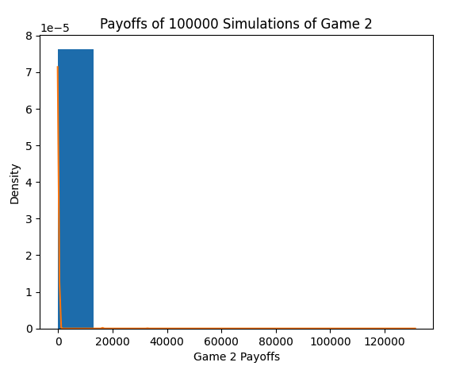
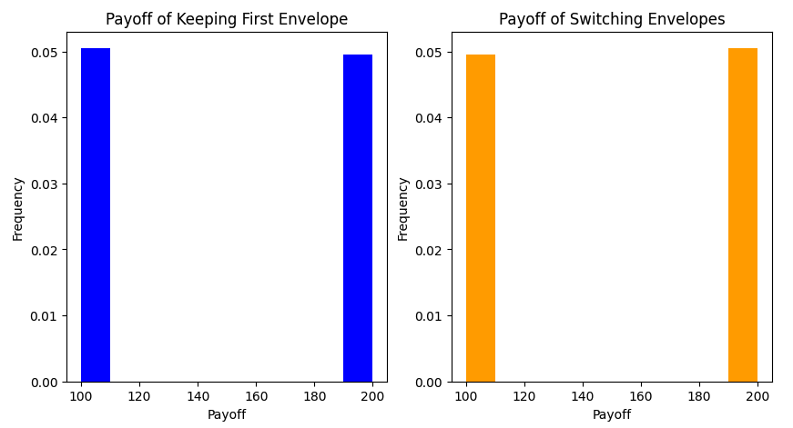

1. Introduction
Decisions are typically made using expectation, or in mathematical terms, expected value, which is measured in the context of both probability and outcome. As an example, people decide whether to buy something based on whether their perceived, or expected, value of that thing is greater than the price of that thing. A specific instance of this is traders and investors in the stock market who try to buy stocks at a discount of their true value. Many traders have their own models of estimating expected returns of stocks. If a stock is trading at a discount to what their model believes, then they should buy the stock. In other simpler scenarios, the computation of expected value is more straightforward and intuitive. For example, the expected value of a fair standard dice roll (1 to 6) is 3.5 because the dice will roll above that half the time and below it the other half. Therefore, if someone offered a game where they pay you the outcome of your single dice roll, a rational person would agree to pay no more than $3.50 to play. Furthermore, the expectation can be verified by running Monte Carlo simulations and looking at the distribution and mean of the outcomes, comparing the result to your computed expectation.
However, the computation of expected value can sometimes be very misleading. Although in many cases expectation offers a good estimate of outcomes, there also exist cases where expectation and outcome deviate, particularly when there are possible scenarios of extreme outcomes (good or bad), potentially biasing expectation. This deviation implies that it may not always be the best rational decision to completely trust and accept the expectation. The Illusion of Expectation exists because expectation sometimes tends to overweight extreme outcomes, and underweight the relatively smaller probabilities of those outcomes.
2. Paradoxes of Expected Value
2.1 A Dream Lottery
To demonstrate how expected value can be misleading, we first take a simple example of a lottery that has a 99.999% chance of losing and 0.0001% chance of winning the jackpot. Let's say that the jackpot prize was the world's GDP as of 2024, approximately $110,000,000,000,000.00, or 110 trillion dollars. How much is the expected payoff of this lottery, or in other words, how much would you be willing to pay for a lottery ticket? The expected value of such a lottery would be: \($0.99999\cdot0+0.000001\cdot\$11\cdot10^{13}=\$110,000,000$\) However, almost no rational person would be willing to bet their life savings on such a lottery, despite the expectation suggesting otherwise. This is because the probability of the best outcome is far too small for us to risk so much capital, despite the significant payoff if the best outcome were to occur. If lottery tickets were offered for $1,000,000 a ticket, hardly anyone would consider purchasing. This scenario is an instance where the expectation, which is to win over $100 million, deviates from reality, which is most likely to win nothing from the lottery.
2.2 St. Petersburg Paradox
Illusions of expectation like these exist more commonly than most expect. In many cases, they are much more well-hidden and less obvious to notice. A famous example of this is known as the St. Petersburg paradox where, similarly, the intuitive thing to do deviates from the theoretical expectation.
First, consider a casino that offers a game where a player starts with $2 in the pot. The player continuously flips coins. For each heads they get, the player gets an additional $2. The game ends when the player flips a tail, and the player then keeps what is in the pot. What is the most you would pay to play this game, or, in other words, how much do you expect to win from this game? Most people would not expect to win that much, as it is easy to flip a tails and end the game. Say, some people who are very confident in their coin-flipping abilities may believe they can flip 4 heads in a row before flipping a tails, resulting in a payout of: \(\$2\cdot4=\$8\) Other people who are not as confident may believe they can flip only 1 heads before they flip a tails, resulting in a payout of only $2. The theoretical expected payoff, \(P_1\), for this game is: $$\text{E}[P_1] = \sum_{n=1}^{\infty}\frac{2n}{2^n} = 2\cdot(\frac{1}{2}+\frac{2}{4}+\frac{3}{8}+...) = 2\cdot2 = 4$$ Now, consider a casino that offers a game where a player starts with $2 in the pot. The player continuously flips coins. For each heads they get, the pot doubles in size. The game ends when the player flips a tail, and the player then keeps what is in the pot. Notice that the only difference between this game and the previous is the payout, where the previous game had a payoff of \(2n\) and this game has a payoff of \(2^n\) for \(n\) heads flips. The probabilities of flipping heads and tails have not changed. What's the most you would pay to play this game, or, in other words, how much do you expect to win from this game? Most people would expect a similar payout as the previous game, and would not expect a significant difference, because it is likely for a tails to appear early on in the game. Say, some people who are very confident in their coin-flipping abilities may believe they can flip 4 heads in a row before flipping a tails, resulting in a payout of: \(\$2^4=\$16\). Other people who are not as confident may believe they can flip only 1 heads before they flip a tails, resulting in a payout of only \$2. Of course, this game is worth more than the first, because \(2^n>2n\) for \(n>2\). Nevertheless, the difference in expected payoff does not appear to be very significant or big. Astonishingly, however, is that the theoretical expected payoff, \(P_2\), for this game is: $$\text{E}[P_2] = \sum_{n=1}^{\infty}\frac{2^n}{2^n} = \sum_{n=1}^{\infty}1 = 1+1+1+... => \infty$$ The expected payoff for this game is theoretically infinite. The expectation implies that paying \$1,000,000 to play this game would be worth it. However, most rational people would not pay even more than \$10 to play this game. And they would be correct: it would be foolish to pay that much for this game because it is very unlikely to reach the stage where the payouts would be significant. A simple Monte Carlo simulation of 100,000 trials of this game using a fair coin yields the following results:
Figure 1: Density Histogram of Game 2 Payoffs Over 100,000 Simulations
The simulation yields a mean payoff of \$16.79, a min payoff of \$2 (no heads), and a max payoff of \$131,072 (17 consecutive heads). Observing Figure 1, it is clear that the distribution of payoffs is very skewed (skewing right towards higher outlier rewards). The more simulations you run, the more likely you will encounter these outlier scenarios where heads consecutively appears for many rounds until the first tails appears, resulting in extremely large payoffs. Nevertheless, most of the time, the game ends within a few rounds; a mean payoff of \$16.79 is nowhere close to the infinite expectation previously calculated.
The correct way to think about this problem, based on experience, is that it is very likely for the game to end early on than it is for the game to continue to the point where payoffs become significant, suggesting that although we should hope to flip more heads in a row, we should prepare for the more likely result, an early tails with limited payoff. Looking at the bigger picture, the payoffs of the second game have indeed increased exponentially relative to the first game, but the probabilities of reaching each stage have not changed. If the expected payoff of the first game is only \$4, suggesting that we will only flip one heads before flipping a tails, then what would suggest that the second game will be any different? Theoretically, if you could play this game an infinite amount of times, there would eventually be a point where your payoff approached \(\infty\). However, we must remember that practically, it is impossible to play this game that many times and it is not worth to invest the limited amount of capital we have into such an improbable event.
2.3 Two Envelopes Paradox
One more example of a scenario where the expectation is counterintuitive is known as the Two Envelopes Paradox. Say there are two envelopes: one contains \($X\), the other contains \($2X\), double the money of the first envelope. You can pick one envelope and open it to see how much money is inside. You get a chance to switch to the other envelope or keep your current envelope. Do you switch to the other envelope or not? Or does it not matter? For example, if you picked an envelope and it had $100 inside, you would know that the other envelope has either $200 or $50 inside it, meaning that by switching to the other envelope, you have the potential of either making another 100% or losing 50% of what you currently have. Intuitively, most people would initially think that the switch does not matter based on symmetry, as you had an equal chance of selecting the envelope with \($X\) or the envelope with \($2X\). However, the additional expected payoff of switching, \(S\), to the other envelope, \(E_2\), versus keeping your current envelope, \(E_1\), is: $$\text{E}[S] = \text{E}[E_2] - \text{E}[E_1] = (\frac{1}{2}\cdot\frac{X}{2}+\frac{1}{2}\cdot2X) - (X) = (\frac{X}{4}+X) - (X) = \frac{X}{4} > 0 \text{ for } X > 1$$
\(\text{E}[S]\) should be 0 (i.e. \(\text{E}[E_2] = \text{E}[E_1]\)) if there was no value in switching. However, the expectation suggests that by switching to the other envelope, you have an additional \(\frac{\$X}{4}\) in expected winnings, where $X$ is the value of the initial envelope opened. This implies that if you had picked an envelope with $100 inside, you would expect to receive an additional $25, or a total of $125 by switching to the other envelope, which has either $50 or $200 inside. This would imply that our first choice is always wrong and that we should always contradict and inverse our first choice to improve our odds of receiving a greater payoff.
However, this does not make sense because we have a 50% chance to select the envelope with \($X\), and a 50% chance to select the envelope with \($2X\). Switching would simply mean inversing our first choice, which is still the same as randomly picking one of the envelopes. Furthermore, this same switch argument can be made using the same logic regardless of which envelope we initially select. Intuitively, switching should not have any impact on our payoffs from this game. Although the expectation suggests otherwise, running a Monte Carlo simulation of 100,000 trials for the above scenario confirms our intuition that the switch does not matter:
Figure 2: Density Histograms of Keeping vs. Switching Envelopes Over 1000,000 Simulations
The simulation yields an average payoff of $149.52 for the first strategy of always keeping your first envelope and an average payoff of $150.48 for the other strategy of always switching to the other envelope. As can be seen, always switching to the other envelope makes no material difference in the resulting payoff. This is because only 2 possible payoffs exist, and you have an equal probability of selecting either.
The correct way to think about this problem, based on experience, is that by performing the switch strategy, you are essentially flipping the two envelopes (i.e. you will end up with \(E_2\) if you picked \(E_1\) at first, and vice versa). Therefore, the actual probabilities of picking \(E_1\) or \(E_2\) have not changed (still 50-50), so the expected payoff of the switching strategy has not changed either. Going to the previous $100 envelope example, when you switch envelopes, you are potentially either doubling (100% gain, or $100 gain) or halving (only 50% loss, or only $50 loss) the money you currently have. Because there exists the potential to gain an extra $100, while only the potential to lose $50, expectation tends to overweight the best possible outcome and forgets that there is only a 50% chance of choosing the \($2X\) envelope or the \($X\) envelope, and that switching will not truly help improve odds for higher payoffs. Perhaps the deviation exists because of the consideration of 3 possible payoffs, $50, $100, and $200, where in fact, there only exists 2 of those 3 payoffs. So estimating the additional expected payoff based on 2 possible outcomes ($50 and $200) of the other envelope is incorrect because only 1 of those outcomes actually exists. This is another instance where expectation deviates from experience because of expectation overweighting larger payoffs.
3. Theory vs. Practice
3.1 Duties of Traders and Researchers
The examples of the Illusion of Expectation explored previously are simple scenarios where the ideas and system dynamics are more intuitive to understand. However, illusions like these appear much more often than in the scenarios we explored. They often exist in more complex systems as well, but are more dangerous and well-hidden, causing us to easily fall prey to them. One of the most dangerous places for these illusions to exist is in the financial markets. When these illusions are not considered or spotted, they can quickly cause a firm to suffer large losses, such as overvaluing a stock.
Many mathematical models built by researchers can potentially suffer from the Illusion of Expectation and it is the job of the traders, who watch the markets all day, to identify these deviations between expectation and outcome. Most of the time, the models built by researchers backed by mathematical foundation will work properly and provide accurate estimates. However, for those particular instances where models predict (or fail to predict) price movements that are likely to happen, manual intervention must happen. This is why having a pragmatic perspective and understanding of the markets is so important. Unlike the previous simple lottery example, where most people would have a realistic understanding and estimation of the payoff likelihoods, markets are much more complex, where these disconnects between expectation and reality can occur more frequently and subtly. Traders build experience and intuition by actually observing market movements every day, so that when there appears to be a disconnect between expectation and reality, traders can quickly step in to take action.
3.2 Human Expectation and Experience
Humans similarly estimate expectations based on probabilities and corresponding outcomes. We often tend to overweight our expectations and thoughts on outcomes of the best-case scenarios and worst-case scenarios, particularly if the outcomes of those scenarios are too good or too horrible.
Have you ever set your expectations too high and ended up being disappointed? Or have you ever been terribly afraid or worried about something, ultimately to find that things were not as bad as they seemed? The human mind initially forms a model of expectation, driven by potential outcomes, similar to the models and formulas of expected value that were previously discussed. Humans then follow that model in their minds to take actions in their daily lives in the real world and experience results, similar to the Monte Carlo simulations that were previously shown. However, unlike the mathematical models of expectation previously discussed, humans can learn from experience. Interestingly, when humans experience letdowns and disappointments, experiencing the Illusion of Expectation, they gradually learn to adjust and lower their expectations to avoid being let down, almost as to impose a self-penalty for expectation on very high payoffs/great outcomes that have very low probabilities of occurring. Experience helps humans adjust their internal model of expectation to fit more in line with reality. This is an important distinction between the decision-making process of humans who have undergone real experiences and the decision-making process of algorithms that are rule-based and are not affected by experiences. Nevertheless, human minds have significant limitations in the amount of data that can be processed to accurately estimate the possible outcomes and probabilities.
3.3 Mathematics, Logic, and AI
From all the previous examples, it is apparent that expectation is very frequently, but not always, perfect. Particularly for practical applications in the world, where both capital and time are limited, it is important to consider the illusions that expectations can portray. Most importantly, for practical applications, it is essential to be able to adapt to real-world circumstances and dynamics, and to address the limitations and constraints of those dynamics. To do so, learning from experience is incredibly important. Mathematical models and algorithms based on logic may not necessarily always be the most practical. Expected value models such as the St. Petersburg example will always have an infinite expected value despite only having very limited gains most of the time.
Alternatively, algorithms that learn from experience, offer the best of both worlds, being able to not only process large amounts of data but also learn from experience. Its ability is demonstrated by many of its outperformings of both humans and rule-based algorithms in various tasks. This topic is another area of exploration that goes beyond the scope of this paper.
4. Conclusion
Ultimately, it is important to remember that although things can be very good if things go right, things often do not always go right, and are likely to deviate from the expectation. It is also important to not worry about the worst-case scenarios so much, as it is just as unlikely for things to always go wrong. The mind, driven by logic and perfection, is analogous to the theoretical setting, while life and experiences occur in the real-world setting. Therefore, summarizing the previous points, one should have higher expectations while dreaming and have more sensible and lower expectations when actively experiencing life in the real world, preparing for anything that could go wrong. Similarly, those dreadful and awful things you are always so self-conscious and worried about will likely not manifest, and you'll be alright. The goal is to flatten your expectations and lean towards neutrality as much as possible.
Appendix
A.1 The Casino's Perspective
As previously discussed in the St. Petersburg paradox, we can examine the exact counterpart of this game to illustrate the other side of the Illusion of Expectation. Taking the exact coin-flipping game as before, suppose you were the casino itself instead of the coin-flipper player. As you are filling the pot, the casino's payoff, \(C\), would be: $$\text{E}[C] = \sum_{n=1}^{\infty}\frac{-2^n}{2^n} = \sum_{n=1}^{\infty}-1 = -1-1-1-... => -\infty$$
Yikes! Your expected loss for providing this game in your casino is unlimited. As the casino's owner, seeing this math would make you lose sleep every day, constantly imagining and expecting the worst possible outcome of losing everything and going bankrupt. To be safe, the expectation suggests never offering this game, not even if somebody were to pay you $1,000,000 to play. But thinking about it, you are missing out on $1,000,000, where the probability of actually losing that much is very low. By the time that someone actually wins $1,000,000 from you, you would already have made more than enough to cover those losses. Any rational casino would be unlikely to pass up this opportunity.
Therefore, the moral of the story is that the Illusion of Expectations works both ways, often making you ecstatic for the best possible scenario outcomes while worrying you about the worst ones.